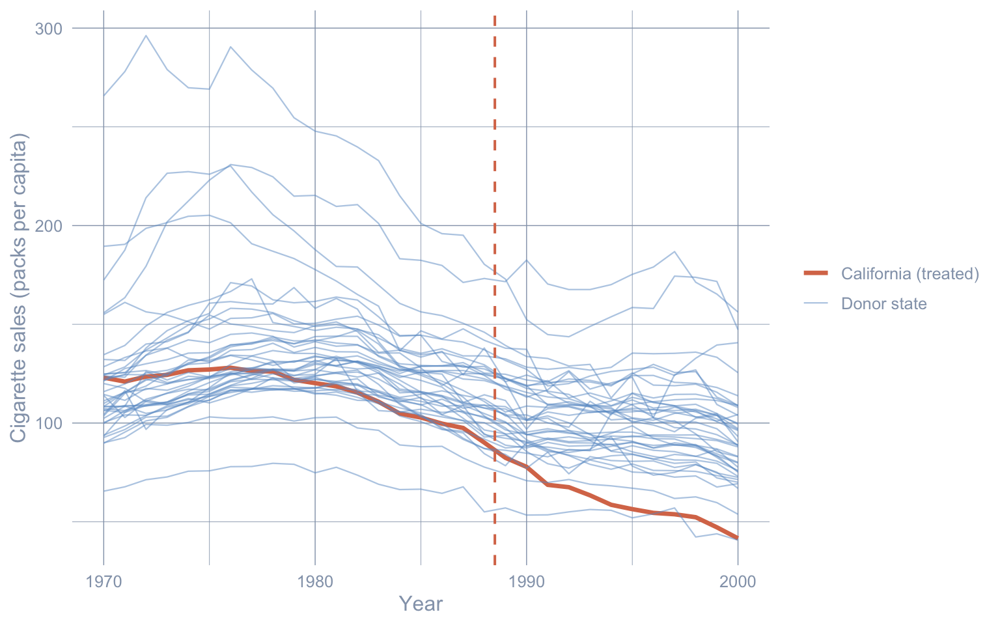

flowchart TB
Q1{"Do you have a credible<br/>donor pool of untreated units?<br/>(roughly 10+ similar units<br/>followed over the same window)"}
Q1 -->|Yes| Q2{"Do you want frequentist<br/>placebo inference,<br/>or Bayesian credible<br/>intervals?"}
Q1 -->|No, only one good control| DiD["Difference-in-Differences<br/>(ch. 4)<br/><br/>Cost: parallel-trends assumption<br/>on a single comparison unit"]
Q1 -->|No, only the treated unit| Q3{"Is the policy date the<br/>only structural break<br/>in the series?"}
Q2 -->|Frequentist + tidy code| SCM["Synthetic Control<br/>(ch. 5)<br/><br/>Cost: convex-combination<br/>of donors must match the<br/>treated pre-period"]
Q2 -->|Bayesian + uncertainty bands| CI["Structural Bayesian TS<br/>(ch. 6)<br/><br/>Cost: state-space prior;<br/>covariate-set choice<br/>affects the estimate"]
Q3 -->|Yes, sharp jump at threshold| RDD["Regression Discontinuity on time<br/>(ch. 3)<br/><br/>Cost: assumes no other shock<br/>coincides with the threshold"]
Q3 -->|No, model the smooth pre-trend| ITS["Interrupted Time Series<br/>(ch. 2)<br/><br/>Cost: pre-trend extrapolation<br/>must be specified correctly"]
NAIVE["Naive pre-post<br/>(this chapter)<br/><br/>Use only as a baseline.<br/>Never as a causal estimate."] -.->|"baseline for everyone"| Q1
1 Introduction
1.1 Why regional impact evaluation?
How do you measure the causal effect of a policy when you cannot randomise who gets treated? Most policy reforms hit a region — a state, province, or country — as a single block. There is no randomisation, no control arm, and often a single treated unit. The job of regional impact evaluation is to recover the missing counterfactual: what would the region have looked like without the policy?
This book is a guided tour of the small set of quasi-experimental methods that have become the workhorses of that job. Each one builds the counterfactual from a different data source — the region’s own past, a single neighbour, a weighted blend of donor regions, or a Bayesian time-series model — and each one therefore pays a different price in identifying assumptions. The disagreements between methods are the lesson.
We anchor the entire book around one canonical case study: California’s 1989 Proposition 99 cigarette tax. Per-capita cigarette sales in California fell from 116 packs in 1988 to 60 packs in 2000 — almost a 50% drop. But the country as a whole was also smoking less. The question is deceptively simple:
How much of California’s drop was caused by Proposition 99, and how much would have happened anyway?
The case study is famous: the original synthetic-control paper by Abadie et al. (2010) used exactly this dataset. We replicate their estimate and then watch what happens when five other estimators are swapped in.
1.2 Causal inference as a missing-data problem
Before fitting any model, we need a vocabulary for what we are estimating. The cleanest one is the potential outcomes framework, due to Neyman (1923) and Rubin (1974). Its central insight is that causal inference is a missing-data problem.
1.2.1 Two outcomes per unit, one observed
For each unit \(i\) at time \(t\), imagine two potential outcomes:
- \(Y_{it}(1)\) — cigarette sales in state \(i\) at year \(t\) with Proposition 99 in force.
- \(Y_{it}(0)\) — cigarette sales in state \(i\) at year \(t\) without Proposition 99 in force.
Let \(D_{it} \in \{0, 1\}\) be the treatment indicator. Here \(D_{it} = 1\) for California from 1989 onward, and \(D_{it} = 0\) everywhere else (every other state, plus California up to and including 1988). The outcome we observe is one of the two potential outcomes, never both:
\[Y_{it} \,=\, D_{it}\, Y_{it}(1) \,+\, (1 - D_{it})\, Y_{it}(0).\]
In words: if California in 1995 was treated, we observe \(Y_{1995}(1)\) — not the counterfactual \(Y_{1995}(0)\), which is what California’s smoking would have been in 1995 had Proposition 99 never passed. That counterfactual is the missing data.
1.2.2 The fundamental problem of causal inference
Make the missing data concrete. The table below shows what is observed (✓), what is undefined because the state was never treated (—), and what is missing-and-must-be-imputed (?) for a handful of rows.
| State | Year | \(D_{it}\) | \(Y_{it}(0)\) | \(Y_{it}(1)\) | Observed |
|---|---|---|---|---|---|
| California | 1988 | 0 | 90.1 ✓ | ? | 90.1 |
| California | 1989 | 1 | ? | 82.4 ✓ | 82.4 |
| California | 1995 | 1 | ? | 64.4 ✓ | 64.4 |
| California | 2000 | 1 | ? | 41.6 ✓ | 41.6 |
| Nevada | 1988 | 0 | 134.4 ✓ | — | 134.4 |
| Nevada | 1995 | 0 | 113.0 ✓ | — | 113.0 |
| Utah | 1988 | 0 | 64.7 ✓ | — | 64.7 |
| Utah | 1995 | 0 | 55.0 ✓ | — | 55.0 |
This is what Holland (1986) called the fundamental problem of causal inference: for any treated unit at any time, we observe at most one of the two potential outcomes, and the other one is missing. For California after 1989 the missing column is \(Y_{it}(0)\) — every “?” in the third column. Every method in this book is a way to fill in those question marks.
1.2.3 Three estimands: ITE, ATE, ATT
With both potential outcomes defined, the natural causal contrasts follow.
Individual treatment effect (ITE) for unit \(i\) at time \(t\):
\[\tau_{it} = Y_{it}(1) - Y_{it}(0).\]
The ITE is the gold standard, but it is never directly observable for any single \((i, t)\).
Average treatment effect (ATE) over a population:
\[\text{ATE} = \mathbb{E}\big[Y_{it}(1) - Y_{it}(0)\big].\]
How smoking would have changed in the average state-year if all states had been treated. The ATE is identified by a randomised experiment — but Proposition 99 was not randomised. The ATE is not what we are after here.
Average treatment effect on the treated (ATT), restricted to units that actually received the treatment:
\[\text{ATT} = \mathbb{E}\big[Y_{it}(1) - Y_{it}(0) \,\big|\, D_{it} = 1\big].\]
How much smoking changed in California, in the post-1989 years because of Proposition 99. This is what every causal method in this book targets. For Proposition 99 the ATT averaged over 1989–2000 expands to
\[\text{ATT}_{\text{CA, post}} = \frac{1}{T_{\text{post}}} \sum_{t > t^*} \Big[Y_{1t}(1) - Y_{1t}(0)\Big],\]
where unit \(i = 1\) denotes California, \(t^* = 1988\) is the last pre-period year, and \(T_{\text{post}} = 12\) is the number of post-period years (1989–2000). The first term — \(Y_{1t}(1)\) — is observed. The second term — \(Y_{1t}(0)\) — is missing.
1.2.4 Each method is a way to impute the missing \(Y(0)\)
The table below makes this concrete: one row per method covered in this book.
| Method (chapter) | Estimator of the missing \(Y_{1t}(0)\) |
|---|---|
| Naive pre-post (this chapter) | \(\widehat{Y_{1t}(0)} = \overline{Y}_{1, \text{pre}}\) — California’s own pre-period mean. |
| Interrupted Time Series — growth curve (ch. 2) | \(\widehat{Y_{1t}(0)} = \hat\alpha + \hat\beta\, t\) — extrapolate California’s pre-period linear fit. |
| Interrupted Time Series — ARIMA (ch. 2) | $ = $ forecast from an ARIMA model fitted on 1970–1988. |
| Regression Discontinuity on time (ch. 3) | \(\widehat{Y_{1t}(0)} = \hat\alpha + \hat\beta\, (t - t^*)\) — extrapolate California’s pre-period piecewise fit. |
| Basic Difference-in-Differences (ch. 4) | \(\widehat{Y_{1t}(0)} = \overline{Y}_{1, \text{pre}} + \big(\overline{Y}_{0, \text{post}} - \overline{Y}_{0, \text{pre}}\big)\) — add a control state’s change. |
| Classical Synthetic Control (ch. 5) | \(\widehat{Y_{1t}(0)} = \sum_{i \in \text{donors}} w_i^* Y_{it}\) — weighted blend of donor states. |
| Structural Bayesian Time Series (ch. 6) | \(\widehat{Y_{1t}(0)} = \mu_t + \beta^\top x_t\) — Bayesian structural time-series fit on donor data. |
Each subsequent chapter takes one row and shows the R code that builds the corresponding \(\widehat{Y_{1t}(0)}\), then subtracts it from the observed California series to recover the ATT.
1.3 Which method when?
The methods are not interchangeable. Each is appropriate for a different data situation. The decision tree below walks through three diagnostic questions and steers you to the matching family. Apply it whenever you face a new regional policy-evaluation problem.
The Synthetic Control and Bayesian structural TS branches are the most defensible families when a donor pool exists. DiD, RDD-on-time, and ITS are valid in their respective data situations but carry stronger identifying assumptions. The naive pre-post node — the rest of this chapter — is the universal baseline that everyone should compute first, never as the final answer, always as the bias yardstick.
1.4 Setup and data
We load the packages we need with library() calls. Every package below is pinned in renv.lock, so renv::restore() is enough to reproduce the environment on a fresh machine.
Code
library(tidyverse)
library(sandwich)
library(lmtest)
set.seed(42)The dataset is cached in the repository at data/proposition99.rds. It is a panel of 39 U.S. states observed 1970–2000, with per-capita cigarette pack sales (cigsale) as the outcome and four covariates.
Code
prop99 <- read_rds("data/proposition99.rds") |> as_tibble()
# Subset to California and add a Pre/Post factor based on the policy date.
prop99_cali <- prop99 |>
filter(state == "California") |>
mutate(prepost = factor(year > 1988, labels = c("Pre", "Post")))
prop99_cali |>
group_by(prepost) |>
summarize(n = n(),
mean_cigsale = mean(cigsale),
sd_cigsale = sd(cigsale),
.groups = "drop")# A tibble: 2 × 4
prepost n mean_cigsale sd_cigsale
<fct> <int> <dbl> <dbl>
1 Pre 19 116. 11.7
2 Post 12 60.4 12.1California’s average per-capita cigarette sales fell from about 116 packs (1970–1988) to about 60 packs (1989–2000) — a within-state drop of roughly 56 packs, or 48% of the pre-period mean. That is the raw before/after change. The rest of the book is about how much of that drop we can credibly attribute to Proposition 99 rather than to the broader American secular decline in smoking.
Before any modelling, it helps to see all 39 series at once.
Code
eda_data <- prop99 |>
mutate(unit_type = if_else(state == "California",
"California (treated)", "Donor state"))
ggplot(eda_data, aes(x = year, y = cigsale, group = state,
color = unit_type,
linewidth = unit_type, alpha = unit_type)) +
geom_line() +
geom_vline(xintercept = 1988.5, color = "#d97757",
linetype = "dashed", linewidth = 0.7) +
scale_color_manual(values = c("California (treated)" = "#d97757",
"Donor state" = "#6a9bcc")) +
scale_linewidth_manual(values = c("California (treated)" = 1.2,
"Donor state" = 0.4)) +
scale_alpha_manual(values = c("California (treated)" = 1,
"Donor state" = 0.5)) +
labs(x = "Year", y = "Cigarette sales (packs per capita)",
color = NULL, linewidth = NULL, alpha = NULL) +
theme_minimal()
California sits inside the donor cloud throughout the 1970s and 1980s, then visibly separates downward after the dashed Proposition 99 line. The pre-1988 trajectory is already slightly below the donor median, but it is not anomalous; the sharp post-1988 separation is. Visually, this is the signal every causal estimator in the book tries to quantify.
1.5 A first attempt: naive pre-post
The idea. Compare California’s mean cigarette sales before 1989 with its mean after 1989. Call the difference the “effect”.
The equation.
\[\hat\tau_{\text{naive}} = \overline{Y}_{1, \text{post}} - \overline{Y}_{1, \text{pre}}.\]
In words: the naive estimate is the difference between California’s observed post-period mean and California’s observed pre-period mean. This corresponds to imputing \(\widehat{Y_{1t}(0)} = \overline{Y}_{1, \text{pre}}\) — i.e., assuming California’s counterfactual smoking would have been frozen at the pre-period average.
Why this is wrong but still useful. The implicit counterfactual “California’s pre-period level continues unchanged” is almost certainly wrong, because smoking was declining nationwide. But the estimate is so cheap to compute that it makes a useful baseline. Every later chapter tries to fix what is broken here.
We follow the convention of the ODISSEI workshop (ODISSEI Social Data Science team, 2024) and restrict to the 1984–1993 window for the naive estimate. Using the full 1970–2000 window would change the numbers but not the qualitative point.
Code
# OLS of California's cigsale on a Pre/Post dummy, restricted to the
# workshop's 1984-1993 window.
fit_prepost <- lm(cigsale ~ prepost,
data = prop99_cali |> filter(year > 1983, year < 1994))
# Replace the default OLS standard errors with HAC (heteroskedasticity-
# and-autocorrelation-consistent) errors, which short time series need.
coeftest(fit_prepost, vcov. = vcovHAC)
t test of coefficients:
Estimate Std. Error t value Pr(>|t|)
(Intercept) 98.9800 2.4999 39.5941 1.821e-10 ***
prepostPost -27.0200 5.2951 -5.1029 0.0009266 ***
---
Signif. codes: 0 '***' 0.001 '**' 0.01 '*' 0.05 '.' 0.1 ' ' 1Reading the output. California’s mean over 1984–1988 was about 99 packs/capita. The prepostPost coefficient says the 1989–1993 mean is roughly 27 packs lower. The HAC robust standard error is small (\(p < 0.001\)). The HAC correction comes from sandwich::vcovHAC and accounts for the heteroskedasticity and autocorrelation that short time series typically exhibit; a classical OLS standard error would be wildly overconfident here.
The estimand is purely descriptive. This is a within-state difference of means, not a causal estimate. Any nationwide secular decline in smoking gets silently bundled into the \(-27\). That bundling is exactly what the later chapters try to undo.
Common pitfall. Confusing the within-state pre-post difference with a causal effect. Anything that shifted the entire country between the two windows — federal anti-smoking campaigns, tobacco settlements, rising health awareness — gets attributed entirely to Proposition 99.
1.6 Roadmap of the book
The remaining chapters take the same Proposition 99 dataset and the same estimand (the ATT on California, 1989–2000), and replace the naive baseline with progressively richer counterfactual constructions:
- Chapter 2 — Interrupted Time Series. Extrapolate California’s own pre-trend forward. Two variants: a linear growth curve and an auto-selected ARIMA forecast.
- Chapter 3 — Regression Discontinuity in Time. Fit a piecewise line with a level and slope break at the policy date.
- Chapter 4 — Basic Difference-in-Differences. Subtract a control state’s pre/post change from California’s.
- Chapter 5 — Classical Synthetic Control. Build a weighted blend of donor states that mimics California’s pre-period.
- Chapter 6 — Structural Bayesian Time Series. Fit a Bayesian state-space model that uses donor states as predictors.
A final cross-method comparison places all the estimates on a single forest plot. Five of the six methods agree on a 13–20 pack reduction per capita. One collapses to noise. One flips sign entirely. The disagreement is the lesson.